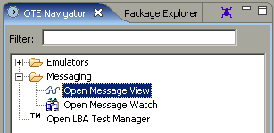

Message View
What it is
The Message View tool provides a listing of all messages in the currently checked
out Messages.jar file. The main purpose is facilitating adding messages or message
elements to the MessageWatch tool, such that the trasmission of messages and values
of elements can be viewed.
How to do it
From the OTE Navigator View, open the Messaging folder and double click on
"Open Message View". It can be launched from the OTE Navigator.
